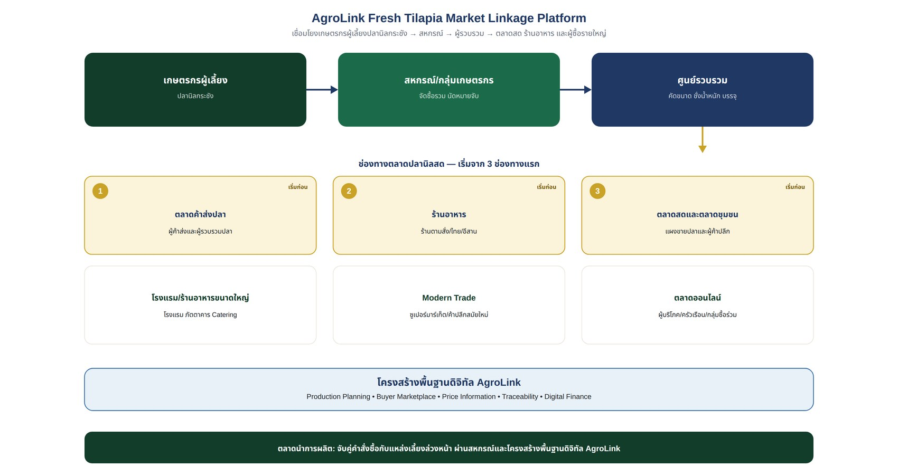

เชื่อมโยงเกษตรกรผู้เลี้ยงปลานิลกระชัง → สหกรณ์ → ผู้รวบรวม → ตลาดสด ร้านอาหาร และผู้ซื้อรายใหญ่
เอกสารแนวคิดเชิงยุทธศาสตร์ | ตุลาคม 2569 — บริษัท ภักดี คอร์ปอเรชั่น จำกัด (AgroLink)
การพัฒนาตลาดปลานิลสดในประเทศไทยควรเป็นตลาดหลักของ AgroLink ในระยะแรก ก่อนขยายไปสู่ปลานิลแล่แช่แข็งเพื่อส่งออก เนื่องจากสามารถเริ่มจากตลาดที่ผู้บริโภคคุ้นเคย ไม่ต้องลงทุนสร้างโรงงานแปรรูปขนาดใหญ่ตั้งแต่ต้น และพัฒนาระบบรับซื้อให้มีความแน่นอนมากขึ้นได้
อย่างไรก็ตาม ต้องแยกให้ชัดระหว่างการหาตลาดใหม่กับการเพิ่มยอดขายในตลาดเดิม เพราะหากเพิ่มปริมาณเลี้ยงโดยไม่มีคำสั่งซื้อรองรับ อาจทำให้ปลานิลล้นตลาดและราคาตกต่ำได้
กรมประมงเคยระบุถึงความสำคัญของการพัฒนาตลาดที่สามารถรองรับผลผลิตจำนวนมาก ตลอดจนการพัฒนาห่วงโซ่คุณค่าปลานิลตั้งแต่ต้นน้ำถึงปลายน้ำ
แนวทางที่เสนอคือแบ่งตลาดออกเป็น 6 ช่องทาง โดยแต่ละช่องทางมีลักษณะการซื้อและความต้องการแตกต่างกัน ดังตาราง
| ช่องทางตลาด | ลูกค้าเป้าหมาย | รูปแบบการจำหน่าย | ความสำคัญ |
|---|---|---|---|
| 1. ตลาดค้าส่งปลา | ผู้ค้าส่งและผู้รวบรวมปลา | ปลาสดทั้งตัวจำนวนมาก | ระบายผลผลิตได้เร็ว |
| 2. ตลาดสดและตลาดชุมชน | แผงขายปลาและผู้ค้าปลีก | ปลาสดทั้งตัว แบ่งขนาด | กระจายถึงผู้บริโภค |
| 3. ร้านอาหาร | ร้านอาหารตามสั่ง ร้านอาหารไทย ร้านอาหารอีสาน | ปลาขนาดมาตรฐาน ส่งประจำ | สร้างยอดสั่งซื้อซ้ำ |
| 4. โรงแรมและร้านอาหารขนาดใหญ่ | โรงแรม ภัตตาคาร และ Catering | ปลาคัดขนาด คุณภาพสม่ำเสมอ | มีโอกาสสร้างตลาดคุณภาพสูง |
| 5. Modern Trade | ซูเปอร์มาร์เก็ตและค้าปลีกสมัยใหม่ | ปลาทั้งตัว ปลาทำความสะอาดแล้ว หรือบรรจุถาด | เพิ่มมูลค่าและสร้างแบรนด์ |
| 6. ตลาดออนไลน์ | ผู้บริโภค ครัวเรือน และกลุ่มซื้อร่วมกัน | สั่งล่วงหน้า ส่งตามรอบ | เข้าถึงลูกค้าโดยตรง |
ทั้งสามช่องทางนี้ควรได้รับการทดสอบก่อนขยายกำลังการผลิตหรือเพิ่มจำนวนเกษตรกรในโครงการ
แนวคิดคือเปลี่ยนจากการเลี้ยงปลาแล้วค่อยหาคนซื้อ มาเป็นการวางแผนการเลี้ยงโดยมีข้อมูลความต้องการของตลาดเป็นตัวตั้ง
AgroLink สำรวจความต้องการของผู้ซื้อแต่ละกลุ่ม เช่น
ระบบรวบรวมข้อมูลเกษตรกรผู้เลี้ยงปลานิลกระชัง ได้แก่
กำหนดวันจับให้สอดคล้องกับความต้องการของผู้ซื้อ เพื่อลดความเสี่ยงจากการจับปลาออกมาพร้อมกันจำนวนมาก
จัดระบบรวบรวมปลา คัดขนาด ชั่งน้ำหนัก และควบคุมอุณหภูมิระหว่างขนส่งตามความเหมาะสม เพื่อรักษาคุณภาพและความปลอดภัยของอาหาร
บันทึกราคาขาย ปริมาณที่ส่งจริง สินค้าถูกปฏิเสธหรือสูญเสีย และระยะเวลารับชำระเงิน เพื่อนำข้อมูลกลับไปปรับปรุงการวางแผนรอบถัดไป
ช่องทางนี้มีความน่าสนใจ เนื่องจากร้านอาหารต้องจัดซื้อวัตถุดิบต่อเนื่อง และสามารถกำหนดขนาดปลาที่ต้องการได้
สมมติ AgroLink เริ่มจากร้านอาหาร 100 ร้าน
| รายการ | สมมติฐาน |
|---|---|
| จำนวนร้านอาหาร | 100 ร้าน |
| ปริมาณสั่งซื้อเฉลี่ยต่อร้าน | 20 กก./วัน |
| ปริมาณขายรวมต่อวัน | 2,000 กก. |
| วันส่งสินค้า | 26 วัน/เดือน |
| ปริมาณขายต่อเดือน | 52 ตัน |
| ปริมาณขายต่อปี | 624 ตัน |
หากราคาขายส่งเฉลี่ยสมมติอยู่ที่ 50 บาทต่อกิโลกรัม จะมีมูลค่าการซื้อขายประมาณ 2.6 ล้านบาทต่อเดือน หรือ 31.2 ล้านบาทต่อปี
ไม่จำเป็นต้องจำหน่ายเฉพาะปลาทั้งตัว เนื่องจากผู้ซื้อแต่ละกลุ่มต้องการความสะดวกแตกต่างกัน
| ผลิตภัณฑ์ | ลูกค้าเป้าหมาย | แนวทางเพิ่มมูลค่า |
|---|---|---|
| ปลานิลสดทั้งตัว | ตลาดค้าส่งและตลาดสด | คัดขนาดและส่งตรงเวลา |
| ปลานิลทำความสะอาดแล้ว | ครัวเรือนและร้านอาหาร | ลดภาระการเตรียมวัตถุดิบ |
| ปลานิลควักไส้ | ร้านอาหารและผู้บริโภค | เพิ่มความสะดวกในการปรุง |
| ปลานิลหั่นชิ้น | ร้านอาหารและครัวกลาง | ควบคุมขนาดชิ้นตามการใช้งาน |
| ปลานิลบรรจุถาดแช่เย็น | ซูเปอร์มาร์เก็ต | สร้างแบรนด์และตรวจสอบย้อนกลับ |
| ชุดปลานิลพร้อมปรุง | ครัวเรือนและช่องทางออนไลน์ | เพิ่มความสะดวกในการบริโภค |
แนวทางที่เสนอคือใช้สหกรณ์หรือกลุ่มเกษตรกรเป็นจุดเชื่อมโยงระหว่างผู้เลี้ยงกับผู้ซื้อ
หากมีปริมาณผลผลิตมากพอ ศูนย์รวบรวมอาจพัฒนาเป็นศูนย์คัดบรรจุและรักษาความเย็น โดยต้องพิจารณาความคุ้มค่าของการลงทุนและมาตรฐานสุขลักษณะที่เกี่ยวข้อง
แนวทางนี้ช่วยให้เกษตรกรรายย่อยสามารถรวมปริมาณสินค้าเพื่อเจรจากับผู้ซื้อรายใหญ่ได้ดีขึ้น
AgroLink ไม่จำเป็นต้องเป็นผู้ซื้อปลาทั้งหมดมาเก็บไว้เอง แต่สามารถทำหน้าที่เป็นแพลตฟอร์มเชื่อมโยงข้อมูลและธุรกรรม
| ระบบ | หน้าที่ |
|---|---|
| Farmer & Farm Management | จัดเก็บข้อมูลเกษตรกรและฟาร์ม |
| Production Planning | คาดการณ์ปริมาณและวันจับปลา |
| Buyer Marketplace | รวบรวมความต้องการและคำสั่งซื้อ |
| Price Information | บันทึกราคาเสนอซื้อและราคาซื้อขายจริง |
| Collection & Logistics | วางแผนรวบรวมและจัดส่ง |
| Traceability | ตรวจสอบย้อนกลับแหล่งผลิต |
| Quality Management | บันทึกขนาดปลา คุณภาพ และการตรวจสอบ |
| Digital Finance | เชื่อมโยงแหล่งทุนจากธนาคารหรือผู้ให้บริการทางการเงิน |
| Analytics Dashboard | วิเคราะห์ยอดขาย ต้นทุน และผลตอบแทนของเกษตรกร |
แนวทางที่เสนอคือเริ่มโครงการนำร่องขนาดเล็กก่อนขยายระดับจังหวัด
| ระยะเวลา | กิจกรรม | ผลลัพธ์ที่ต้องการ |
|---|---|---|
| เดือน 1 | สำรวจผู้ซื้อและแหล่งผลิต | ได้รายชื่อผู้ซื้อและปริมาณความต้องการ |
| เดือน 2 | ทดลองจับคู่เกษตรกรกับผู้ซื้อ | ได้ข้อตกลงซื้อขายเบื้องต้น |
| เดือน 3 | ทดลองรวบรวมและจัดส่ง | ทราบต้นทุนและปัญหาหน้างาน |
| เดือน 4 | ขยายร้านอาหารและตลาดสด | เพิ่มลูกค้าซื้อซ้ำ |
| เดือน 5 | ทดสอบสินค้าคัดขนาดและแปรรูปเบื้องต้น | ประเมินโอกาสเพิ่มมูลค่า |
| เดือน 6 | วิเคราะห์ผลและปรับโมเดล | ได้แผนขยายธุรกิจที่อิงข้อมูลจริง |
แนวทางที่เสนอคือเริ่มจากโมเดลตลาดนำการผลิต (Market-led Production) โดยดำเนินการตามลำดับดังนี้
ข้อเสนอคือจัดทำฐานข้อมูลผู้ซื้อปลานิลสดในประเทศไทย โดยแบ่งตามจังหวัด ประเภทผู้ซื้อ ปริมาณรับซื้อโดยประมาณ ขนาดปลาที่ต้องการ และช่องทางติดต่อ จากนั้นจึงนำข้อมูลมาจับคู่กับพื้นที่เลี้ยงปลานิลกระชังที่มีศักยภาพ
การดำเนินงานเช่นนี้จะช่วยให้ AgroLink พัฒนาจากแพลตฟอร์มข้อมูลไปสู่แพลตฟอร์มที่สร้างธุรกรรมจริง และช่วยให้เกษตรกรวางแผนการผลิตตามความต้องการของตลาดได้แม่นยำขึ้น
ไม่ว่าจะในฐานะเกษตรกรผู้เลี้ยงปลานิลกระชัง สหกรณ์/กลุ่มเกษตรกร ผู้รวบรวม ผู้ซื้อรายใหญ่ หรือหน่วยงานภาครัฐ ติดต่อทีมงาน AgroLink เพื่อขอข้อมูลเพิ่มเติมได้ทันที